Selecting the External Programs option from the SCFG will bring you to the following sub-menu, an explanation of the options shown here follow.
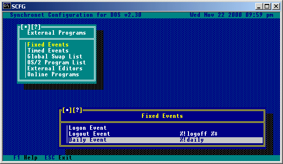
Logon Event:
This is the command line for a program that will execute during the
logon sequence of every user. The program cannot have user interaction.
The program will be executed after the LOGON message is displayed and
before the logon user list is displayed. If you wish to place a program
in the logon sequence of users that includes interaction or requires
account information, you probably want to use an online external
program configured to run as a logon event.
Logoff Event:
This is the command line for a program that will execute during the
logoff sequence of every user. This program cannot have user
interaction because it is executed after carrier is dropped. If you
wish to have a program execute before carrier is dropped, you probably
want to use an online external program configured to run as a logoff
event.
Daily Event:
This is the command line for a program that will run after the first
user that logs on after midnight, logs off (regardless of what node).
Selecting Timed Events from the External Programs menu will give you a list of currently configured timed events. Following is an example of a timed event called MAIN, and the options available for timed events.
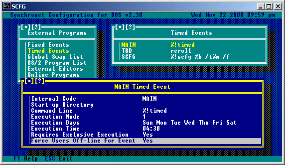
Internal Code:
This is an internal code for SBBS to distinguish this event from
the others on the system. This must be a unique name of up to 8 valid
DOS filename characters.
Start-up Directory:
This is the directory where the event execution should take place.
Synchronet will change to this directory before executing the command
line for this event.
Command Line:
This is the command line for a program that will run on the specified
times and days.
Execution Node:
This is the node that will execute the event.
Execution Days:
These are the day(s) when this timed event will be executed.
Execution Time:
This is the time (in 24hr format) for the above mentioned program
to execute.
Requires Exclusive Execution:
You may set this event to run exclusively (all other nodes inactive
or taken offline) by selecting this option.
Force Users Off-line For Event:
Setting this to Yes will cause the BBS to force users offline for this
event.
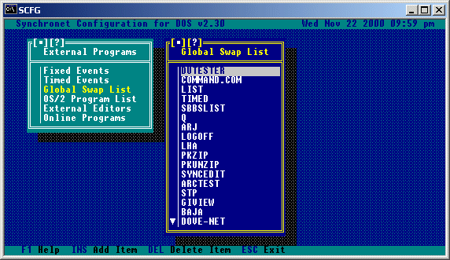 This is a list of programs which, when run, will cause Synchronet to swap out of memory. This is useful for large executables, or programs which have the possibility of Utilitizing a large amount of memory. Shown is an example of what might be in your swap list. Notice that it is not necessary to specify an extension for the programs unless an extension is specified on the command line to be executed. If a file extension is specified (EXE, COM, or BAT) the extension must be specified on the command line for the program to be found in the swap list.
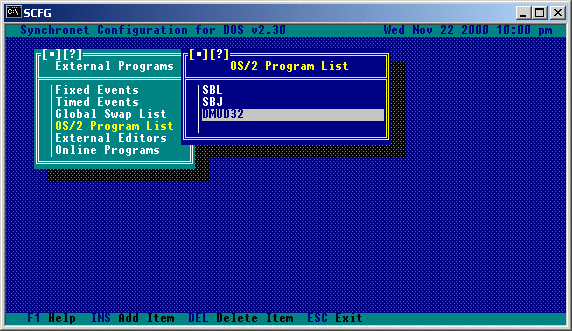 When running a node with Synchronet for OS/2 or Win32, all external programs (doors, editors, file viewers, etc) will be assumed DOS programs and executed inside a virtual DOS machine (VDM) automatically unless the program's name is included in this list. Only CMD.EXE (OS/2 command interpreter) should be included with an extension (e.g. .EXE) unless you actually configure your external program command lines in SCFG with extensions (note ZIP and UNZIP do not have specified extensions). All native Win32 and OS/2 programs that you wish to execute from the BBS must be added to this list.
This selection will bring up a list of external editors that are available as alternatives to the Synchronet built-in editor. Editors can be added and deleted with the INS and DEL keys. Selecting an editor allows you to view and edit its settings. The available settings are (example given is for SyncEdit):
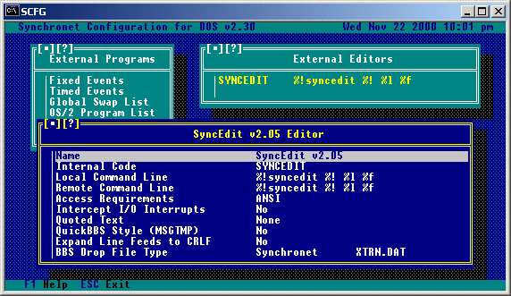
Internal Code:
This is an internal code for SBBS to distinguish this editor from
the others on the system. This must be a unique name of up to 8 valid
DOS filename characters.
Local Command Line:
This is the command line to use when the user is online locally.
Remote Command Line:
This is the command line to use when the user is online remotely.
Access Requirements:
These are the requirements that a user must meet to be able to use
this external editor.
Intercept I/O Interrupts:
If the editor relies on Synchronet for intercepting I/O interrupts,
this option should be set to Yes. When set to Yes, you will be able
to specify whether or not the editor uses WWIV color codes.
Quoted Text:
If you want all the message text to be automatically entered into the
message edit/quote file (INPUT.MSG or MSGTMP), set this option to
'All'.
If you want the user to be prompted for which lines to quote before
running the editor, set this option to 'Prompt User'.
If you want none of the lines to be automatically quoted, set this
option to 'None'. This option is mainly for use with editors that
support the QUOTES.TXT drop file (like SyncEdit v2.x).
QuickBBS Style (MSGTMP):
If this editor was designed to run on QuickBBS, Remote Access, or
SuperBBS (uses a MSGTMP file for editing), set this option to Yes.
This option will also create a MSGINF file automatically as well.
Expand Line Feeds to CRLF:
If this editor stores new lines as a single line feed character, set
this option to Yes.
BBS Drop File Type:
If this editor requires a BBS drop file (DOOR.SYS, DORINFO#.DEF, etc)
use this option to select the drop file format.
This selection will generate a list of configured external program sections. You can add and remove external program sections from this list with the INS and DEL keys. To edit an external program section or the external programs within that section, select it with the arrow keys and hit ENTER. For each external program section, you can set the Name, Internal Code, and Access Requirements. Selecting "Available External Programs" will give a list of external programs contained in this external program section. Synchronet has been designed to eliminate the need for batch files and drop file conversion programs to run external programs (doors) on your BBS. Synchronet supports many different drop file types (often referred to as drop files) listed below.
Software Write File(s) Read File(s) ~~~~~~~~~~~~~~~~~~~~~~~~~~~~~~~~~~~~~~~~~~~~~~~~~~~~~~~~~~~~~~~~~~~~ DOOR32 (v3+ Only) DOOR32.SYS GAP DOOR.SYS DOOR.SYS WWIV CHAIN.TXT PCBoard 14.x PCBOARD.SYS and USERS.SYS USERS.SYS RBBS/QuickBBS DORINFO#.DEF and EXITINFO.BBS EXITINFO.BBS Wildcat! 2.x CALLINFO.BBS SpitFire SFDOORS.DAT TriBBS TRIBBS.SYS MegaMail UTIDOOR.TXT Solar Realms DOORFILE.SR Synchronet XTRN.DAT MODUSER.DAT
Call-back verification and user upgrade programs for other BBS packages may be used, as long as the program supports the DOOR.SYS, EXITINFO.BBS, USERS.SYS, or MODUSER.DAT file format. In general, Call-back verifiers written for PCBoard, GAP, QuickBBS, or Synchronet will work. To allow a program to modify the user data, you must set the option "Modify User Data" to "Yes". The following user data items may be updated with the following formats: DOOR.SYS: Security level, Flag Set #1, Expiration Date, Minutes, Total Files/Bytes Downloaded, and Credits EXITINFO.BBS: Security level and Flag Set #1 USERS.SYS: Security level and Expiration Date MODUSER.DAT: Security level, Flag Set #1-#4, Exemptions, Restrictions, Expiration Date, Credits, and Minutes
Install your new external program into a sub-directory off your XTRN directory. Example: C:\SBBS\XTRN\TRADEWAR If your program asks you to provide the directory where the BBS software is installed or where the drop file will be located, enter the directory where you have installed the program (C:\SBBS\XTRN\TRADEWAR). Note: this is usually only required for programs that do NOT support multiple nodes. The full path and file name of the drop file can be specified on the command line by using the %f command line specifier in SCFG.
Run SCFG from any NODE directory (or hit 'C' at the Waiting For Call screen). Select "External Programs" and hit enter. Hit END and ENTER for the External Program Sections menu and select an External Program Section to add this new program to. Select "Available External Programs" and hit the Insert key. Enter a description for your new external program. Now your new external program appears in the list. Hit ENTER to edit the configuration for this program. Synchronet BBS List is given as an example.
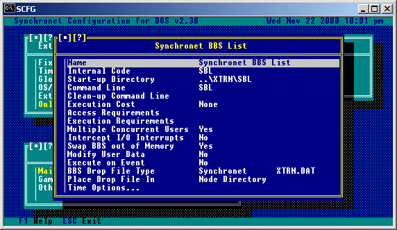 Name: This is the name of the external program that will be shown to users. Start-up Directory: The start-up directory will be the current directory when the program is started. Move the lightbar down to "Start-up Directory" and hit ENTER. Enter the path to the directory where you've installed the program. Command Line: This is the command required to execute your external program. If the path and filename for the BBS drop file is required on the command line, use %f to represent the path and filename. See Appendix A for a full list of available command line specifiers. You can launch a Baja module in place of a DOS executable by prepending an asterisk (*) to the name of the Baja module (e.g. "*MYMOD"). The module .BIN file must be located in your EXEC directory. Some programs, when set to SWAP, require ".\" to be prepended to the command line (e.g. ".\MYDOOR") to function properly. Clean-up Command Line: If your external program requires a clean-up command line (usually only multi-user programs), select "Clean-up Command Line" and enter the required command line for your program. Note: Most programs do NOT require this option. Cost in Credits: If you wish your users to be charged credits when running this program, you should enter the amount to charge the users here. Users with the 'X' exemption will not be charged. Extra Minutes: This option will allow you to give extra time to users for use in the external program they are entering. For example, with this option set to 10, a user having 15 minutes left on the BBS will end up having 25 minutes in the external program they enter. This is especially useful in conjunction with the 'Suspended (Free) Time' option. Suspended (Free) Time: Setting this option to "Yes" will cause a user's time left online to suspend (not countdown) when they enter the external program. The user's time allowed in the external program, however, will be what they had left on the BBS. To give them more time in the external program, use the above 'Extra Minutes' option. Access Requirements: If you wish to limit which users have access to (can see) this program, use this option to set those requirements. Execution Requirements: If you wish to have some users see but not be able to execute this program, use this option to determine what requirements must be met to run the program. Multi-user: If this program supports multiple simultaneous users, set this option to "Yes". Intercept I/O Interrupts: If this program does NOT have it's own modem communications I/O and does NOT use a FOSSIL driver, select "Intercept I/O Interrupts" and set it to "Yes". Note: Most programs require this option be set to "No". Programs written specifically for WWIV or Synchronet BBS software, should usually have this option set to "Yes". Consult the documentation for the program if you are unsure. If you do set this option to "Yes", and the program was not written specifically for Synchronet, you'll need to place the following string at the BEGINNING of your command line: "%!dcdwatch %&". You will also be able to select whether or not the program uses WWIV color codes when setting this option to Yes. Without the use of DCDWATCH, the program will not exit if a user drops carrier (hangs up) while using the program (unless specifically written for Synchronet). Some programs time-out eventually, and exit back to the BBS, but not all. Swap BBS out of Memory: If this program requires a large amount of free memory, set this option to 'Yes' and Synchronet will swap to XMS, EMS, Extended Memory or Disk (see "Node Toggle Options" for Swap Type selection) to make room for this program to execute. Setting this option to 'Yes' has this same effect as adding this program to the "Global Swap List", but is available as a toggle on this menu for your convenience. Modify User Data: If this program can modify the current user's data through one of the supported drop file types (see Call-back Verifiers above), set this option to Yes. Execute on Event: If you want this program to run automatically during user logon, logoff, new user application, or a user's birthday, use this option. BBS Drop File Type: If your program requires a BBS drop file (most do), use this option to select the type of drop file to create. Place Drop File In: This is the directory where the drop file will be created. In general, for multi-user programs or programs that can have the path and filename of the drop file included on the command line or in a config file, select "Node Directory". For single user programs that require the drop file to be in the current directory, select "Start-up Directory". Time Options...: Selecting this option will bring you to a sub-menu similar to the following:
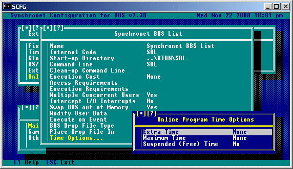
Extra Time: This option allows you to give users an extra amount of time (in minutes) which can be used only within this online program. Maximum Time: This option allows you to set the maximum amount of time a user should be able to spend in this online program (in minutes) PER execution (not per day or per call). Suspended (Free) Time: When this option is set to 'Yes', a users' time is suspended while they are within the online program. That is, if they enter the door with 60 minutes remaining on the BBS, when they get back to the BBS they will still have 60 minutes of time remaining.
It is advised to install all your doors off the SBBS\XTRN directory (e.g. C:\SBBS\XTRN\BRE) if it's not too late. This will help keep all your doors in an easy to reference point. Also, this is where the pre-configured doors (SBL,SMM) are installed by default.
When configuring your Doors it is best whenever possible to place the dropfiles in your SBBS\NODE# directories and configure the game to look there for the file. This ensures smooth Multinode usage if your door supports multiple users at the same time.
From the LORDCFG program your configuration should look something like this:
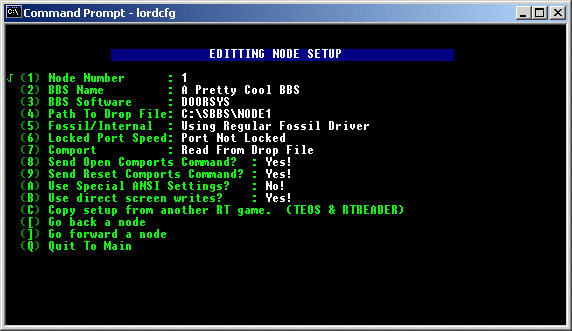
You will need to do this for each of your nodes. Be sure to set the 'Path To Drop File' to the node directory of the node you are configuring. The reason we set the 'Locked Port Speed' to 'Port Not Locked' is because you should be locking the speed of your FOSSIL when you load it, once that's done, it can't be altered.
*** Be Sure to edit START.BAT and check for proper paths and filenames!
Now go into your SCFG program and create a new external program. It should look like this when it's all setup:
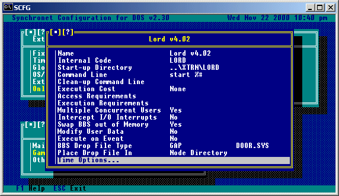
You MUST use a fossil driver in order to use this program. Follow the Usurper documentation for getting the game going.
Next, bring up the USURPER.CFG into a text editor and edit the first few lines (or you can do it through the EDITOR program that comes with Usurper). It should end up looking something like this:
Sysop Name Goes Here BBS Name Goes Here C:\SBBS\XTRN\USURPER\ DORINFO1.DEF |
The important things are line 3 and line 4. Line 3 MUST be the path to your
Usurper directory (with a trailing backslash) and line 4 must be the type
of drop file (I used DORINFO1.DEF like the Usurper documentation recommends).
Now you'll need to go into your SCFG program and add an external program.
Set it up to look something like this:
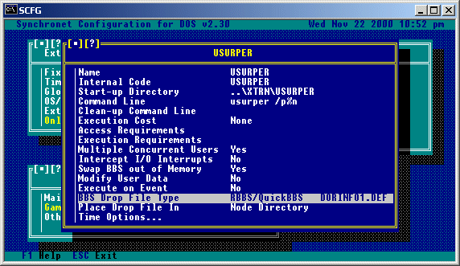
From the TEDIT program your configuration should look something like this:
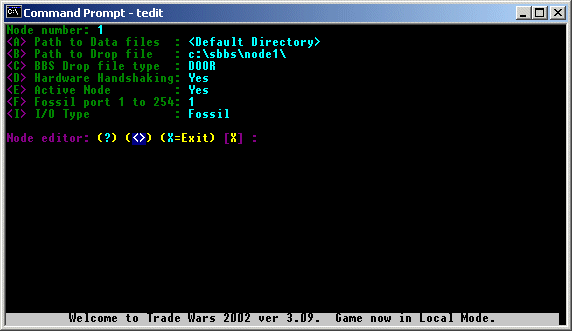
You will need to do this for each of your nodes. Be sure to set the 'Path To Drop File' to the node directory of the node you are configuring. Now go into your SCFG program and create a new external program. It should look like this when it's all setup:
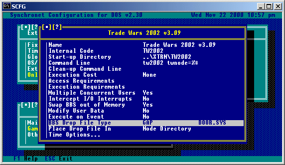
Install and Configure BRE per the instructions in the BRE documentation.
Now go into your SCFG program and create a new external program. It should look like this when it's all setup:
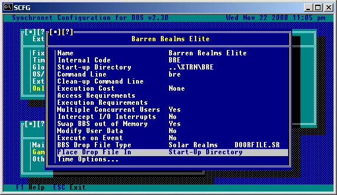 BRE and the other SR / John Daily games are easy with Synchronet since it supports SR Games native DOORFILE.SR . Just place the DOORFILE.SR in BRE's directory and all is well.
** Note: BRE is not Multiplayer and can only be used on one node at a time.
However, we can leave Allow Multiple Users ON in SCFG as BRE will
inform the player the game is in use by itself.
This allows users on your system to be connected to other TCP/Telnet services on the Internet through your BBS. Typically, these services would be other telnetable BBSs and MUDs, although really, you can gate to any single-port TCP service (i.e. POP3, but not FTP).
TELNET_GATE <"str" || str_var> [mode]
The str or str_var argument is the destination address in the format:
<addr>[:port]
If port is not specified, the default is 23 (telnet), or 513 (when the TG_RLOGIN mode is used).
Examples:
"vert.synchro.net" "24.0.193.46" "retromud.org:3000"
The valid mode bits (multiple may be |'d together) are:
TG_ECHO Turn on telnet echo TG_CRLF Expand sole CR to CRLF TG_LINEMODE Send entire lines only TG_NODESYNC Call Nodesync, get msgs, etc. TG_CTRLKEYS Interpret ^P ^U ^T, etc locally TG_PASSTHRU Pass-through telnet commands/responses TG_RLOGIN Use BSD RLogin protocol This function can be called from any module or shell, but will most likely be used from the external programs menu (even though the telnet gate isn't technically an external program). The following modules are included (in your EXEC directory): TELGATE.BIN, MUDGATE.BIN, UNIXGATE.BIN, and RLOGIN.BIN. Use them as follows:
To set-up an external gateway to another BBS:
Command line: "*telgate vert.synchro.net"
To set-up an external gateway to a MUD:
Command line: "*mudgate batmud.bat.org"
To set-up an external gateway to a Trade Wars Game Server (TWGS):
Command line: "*rlogin twgs.someserver.com"
While using the telnet gateway (and not currently in telnet "Binary" mode), users can press ctrl-] for a menu of telnet gate commands including: Disconnect, Toggle Echo, List Users, and Private Message.
This section will explain common reasons why an external program may not be functioning properly and what can be done to get the program functioning properly. It is impossible for Digital Dynamics to be familiar with every available external program, therefore if you continue to have problems with a program after reading this section, you should contact the company that wrote the external program you are working with. IMPORTANT NOTE: Some games will not work properly if you do not put a PATH on the command line (see the L.O.R.D. example), others will (see the Usurper example). If your game is not working at all, try using a path on the command line (e.g.: .\GAMENAME). PROBLEM : The external program works, but displays the wrong user name. SOLUTION: Check to see that the program is looking in the proper place for the drop file. Usually you will need to specify the path to look for the drop file on the command line or in the program's setup program or config file(s). PROBLEM : The program works fine locally, but when people call in they cannot see anything. SOLUTION: If the game uses a FOSSIL driver, make sure that you have a FOSSIL driver loaded and make sure that you've locked the baud rate at the same rate that you've locked Synchronet's com ports. If the game uses it's own internal com routines (no FOSSIL required), you should be able to pass it IRQ and I/O Address information (either through configuration files, or on the command line) otherwise the game probably will not work on anything other than the standard COM1 and COM2. NOTE : Normally only games written for Synchronet or WWIV will ever require the 'Intercept I/O Interrupts' option to be set to YES. If a game has it's own internal com routines or uses a FOSSIL set this option to NO. PROBLEM : The program works fine locally, but when people call in they only see garbled information. SOLUTION: If the game is using a FOSSIL driver, make sure the locked rate of the FOSSIL is the same as the locked rate in Synchronet. If you are running Synchronet under OS/2 and you have "Intercept I/O" set to "Yes" for this program, make sure you are using the SVDMANSI program for ANSI under OS/2. PROBLEM : The program works fine when only one user is playing, but when a second user tries to enter it doesn't function properly. SOLUTION: The program is probably not intended for multiple simultaneous users. Be sure to set the 'Multiple Concurrent Users' option to NO if this is the case.
Copyright © 2000 by Rob Swindell
Synchronet BBS Software (Synchronet)
Version 3 is comprised of several documentation,
library, executable, and source code
files, all of which are covered by the
GNU General Public License with the exception of the following portions
covered by
the GNU Lesser General Public License:
SMBLIB and XSDK.
Synchronet Version 2 (for DOS and OS/2) and its source code was released to the
Public Domain by Digital Dynamics
in 1997 and remains Public Domain software today.
Synchronet Version 3 is not Public Domain software.
Rob Swindell
PO Box 501
Yorba Linda, CA 92885
http://www.synchro.net
For the complete Copyright Information please read the Copyright Documentation .